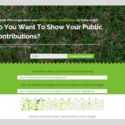
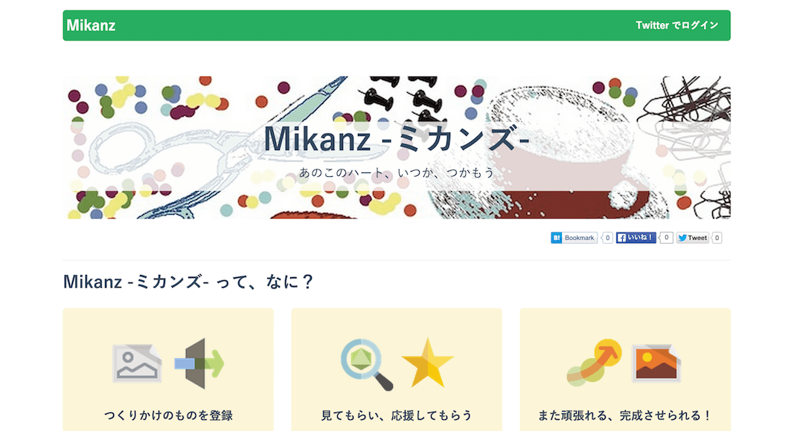
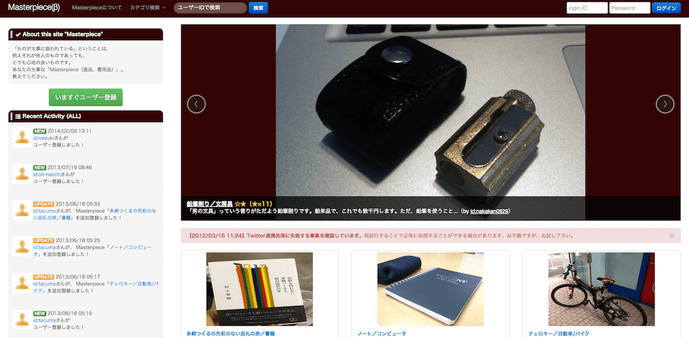

a-know / いのうえ
Web Application Engineer / Tech Lead
Contact Me By...
Twitter @a_know
GitHub GitHub - a-know
Website / Blog えいのうにっき
slideshare a-know's presentation
photo えいのうふぉと
hatena id:a-know
ask.fm Ask to a-know
Employment
Web Application Engineer / Tech Lead
feedforce Inc. 2013/10 - Present
チームビルディング / 新規プロダクトの立ち上げ / 新卒採用サポート / 新卒エンジニアの教育担当
Rails / AWS / Infrastructure as Code / TDD / Scrum
Web Application Engineer / Lead Engineer
CA Beat Inc. 2012/7 - 2013/9
リードエンジニア / 新規プロダクトの立ち上げ
Java / Google App Engine / Google Cloud Datastore
Software Engineer / Project Leader
JFE systems Inc. 2006/4 - 2011/12
プロジェクトリーダー / 実装リーダー / 新卒採用サポート（人事部兼任）
COBOL / Java / Software Design
Education
Kyoto Prefectural University
Postgraduate Course
Optimization by GA 2004/4 - 2006/3
Kyoto Prefectural University
Environment & Technology 2000/3 - 2004/3
Activities
勉強会登壇・発表
合同勉強会 IN 大都会岡山 - 2015 WINTER 2015/12
社内技術ブログ執筆
feedforce Engineers' blog at any time
勉強会登壇・発表
GCPUG イベント「AWS VS GCP」 2015/4
講演
講演・発表 @ 株式会社クレオフーガ 2014/8
勉強会登壇・発表
第3回 岡山 Java ユーザ会 勉強会 2012/7
勉強会登壇・発表
第13回 中国 GTUG 勉強会 2012/4
Achievements
Winning at the Hackathon
Blogged 2012/12
My application was published in magazine
Blogged 2011/12
My software was published in magazines
Blogged 2009/6 2010/2
Master's thesis was published in Journal
Blogged 2009/5
Programming Skills
Ruby
Java
JavaScript
Golang
Scala
Application Framework Skills
Rails
Slim3(appengine)
AngularJS
Play framework
Team Development Skills
Agile / Scrum
Facilitation
Other Development Skills
AWS
GCP
Google App Engine
heroku
Infrastructure as Code
CentOS
MapReduce
TDD
RDB
KVS
GitHub public contributions (by Grass-Graph)

Recent Reading
Portfolio
Grass-Graph (SaaS)
heroku app「Grass-Graph」を、ユーザー各自がデプロイしなくても利用できるよう、SaaS 化したもの。
Rails / GCE / nginx / SVG
Launched at : 2016/02
Grass-Graph (heroku app)
GitHub の Public Contributions グラフをブログパーツ的に表示させたいと考え、作成。
heroku の deploy button の仕組みを利用し、誰でも自分のアプリケーションとして稼働させられるようにもした。
Ruby / Sinatra / heroku / SVG
Launched at : 2016/01
Custom Widget for dashing
ダッシュボードアプリケーションフレームワークである Dashing で使用できる、カスタムウィジェットを作成。
dashing install コマンドで簡単に利用が可能。
Ruby / 各種 API
Launched at : 2015/08
Mikanz - ミカンズ
「みんなの未完成品（ミカン）が集まる場所」。
なにかを作ることを趣味とするユーザーの "つくりかけ" のものを登録し、ユーザー同士が応援しあえる、というコンセプト。
「完成させることができるかどうか」を恐れず、何かを創りだそうとする全ての人を応援する Web サービス。
Rails / heroku / PostgreSQL
Launched at : 2015/06
Goramoph
iTunes 管理楽曲情報の BigQuery ローダ。
iTunes が管理している楽曲情報（曲名・アルバム名・アーティスト名・再生回数・スキップ回数 etc.）を、Google Cloud Storage を経由して Google BigQuery にロードするツール。
golang / Google BigQuery
Launched at : 2014/11
Masterpiece
愛用品紹介サービス。
「大事にされているもの」を集められる場所があれば、そこに登録すること・登録されたものを見ることが小さな楽しみになれば。
そうすれば、きっと何らかの「いい」影響を、この世の中に加えることができるのではと考え、制作した Webサービス。
Java / Google App Engine / Bootstrap/p>
Launched at : 2012/03
sa-boom!! client

iTunes再生回数分析ソフト。
iTunes でカウントされている再生回数。iTunes 上では、再生回数による単純なソートなどを行えるものの、アーティスト別での合計値などでのソートや、ある特定期間での再生回数の算出などは行えない。
これを実現するために開発したもの。
Java FX
Launched at : 2008/08
Emornal ※公開終了※
ユーザーの日毎のTwitterでのツイートを自動で感情解析して、 「晴れ（良い）」「曇り（ふつう）」「雨（悪い）」の3段階のアイコンで日記風にマッピングするサービス。
Mashup Award #8 応募作品。※公開終了※
Java / Google App Engine / 感情解析API
Launched at : 2012/10